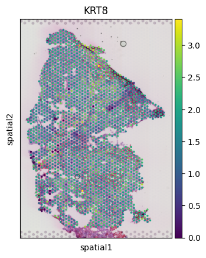
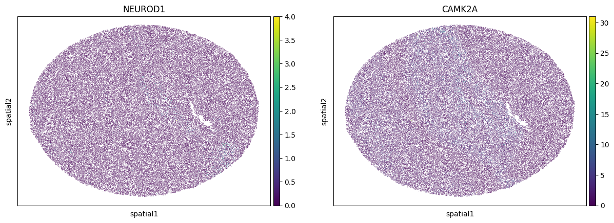
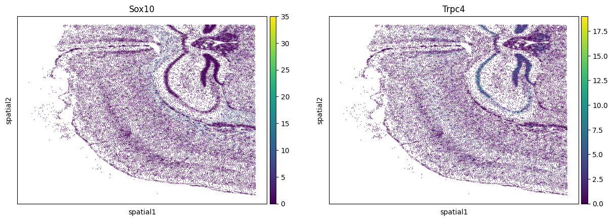

Transfer Seurat object into Scanpy object
To make SOAPy more adaptable, we provide the users a tool to transform Seurat object into SOAPy adapted format.
To use the script here, you should prepare:
A) Python console with:
scanpy, numpy, pandas, rpy2. For Windows user to use rpy2, please refer to https://support.anaconda.com/hc/en-us/articles/360023857134-Setting-up-rpy2-on-Windows.B) R console with:
Seurat, dplyr.[1]:
import os
os.environ['R_HOME'] = './lib/R'
import SOAPy_st as sp
import scanpy as sc
/home/wangheqi/anaconda3/envs/SpatialOmics/lib/python3.9/site-packages/soapy/pp/utils.py:9: NumbaDeprecationWarning: The 'nopython' keyword argument was not supplied to the 'numba.jit' decorator. The implicit default value for this argument is currently False, but it will be changed to True in Numba 0.59.0. See https://numba.readthedocs.io/en/stable/reference/deprecation.html#deprecation-of-object-mode-fall-back-behaviour-when-using-jit for details.
def _filter_of_graph(obs: pd.DataFrame,
/home/wangheqi/anaconda3/envs/SpatialOmics/lib/python3.9/site-packages/soapy/tl/utils.py:66: NumbaDeprecationWarning: The 'nopython' keyword argument was not supplied to the 'numba.jit' decorator. The implicit default value for this argument is currently False, but it will be changed to True in Numba 0.59.0. See https://numba.readthedocs.io/en/stable/reference/deprecation.html#deprecation-of-object-mode-fall-back-behaviour-when-using-jit for details.
@nb.jit()
10X Visium data
[2]:
adata = sp.pp.st_Seurat2Anndata(
'/csb2/project/SpatialPackage_whq/Seurat2Scanpy/KIRC_5.rds',
exp_mat_slot=['RNA','data'],
res_type='lowres'
)
WARNING: The R package "reticulate" only fixed recently
an issue that caused a segfault when used with rpy2:
https://github.com/rstudio/reticulate/pull/1188
Make sure that you use a version of that package that includes
the fix.
R[write to console]:
Attaching package: ‘dplyr’
R[write to console]: The following objects are masked from ‘package:stats’:
filter, lag
R[write to console]: The following objects are masked from ‘package:base’:
intersect, setdiff, setequal, union
[3]:
sc.pl.spatial(
adata,
color=['KRT8']
)

Slide-Seq data
Sample data ssHippo.rds is built as stated in https://satijalab.org/seurat/articles/spatial_vignette#slide-seq.
[4]:
adata = sp.pp.st_Seurat2Anndata(
'/csb2/project/SpatialPackage_whq/Seurat2Scanpy/ssHippo.rds',
exp_mat_slot=['Spatial','data']
)
[5]:
adata
[5]:
AnnData object with n_obs × n_vars = 53173 × 23264
obs: 'orig.ident', 'nCount_Spatial', 'nFeature_Spatial', 'Idents'
var: 'genome'
obsm: 'spatial'
[6]:
sc.pl.embedding(
adata,
basis='spatial',
color=["NEUROD1",'CAMK2A']
)

FOV data
Data from MERSCOPE, 10X Xenium, Nanostring CosMx, CODEX etc. were loaded as the same format in Seurat. Sample data Xenium_mouse_brain.rds is built as stated in https://satijalab.org/seurat/articles/spatial_vignette_2#mouse-brain-10x-genomics-xenium-in-situ-1.
[7]:
adata = sp.pp.st_Seurat2Anndata(
'/csb2/project/SpatialPackage_whq/Seurat2Scanpy/Xenium_mouse_brain.rds',
exp_mat_slot=['Xenium','data']
)
[8]:
adata
[8]:
AnnData object with n_obs × n_vars = 36602 × 248
obs: 'orig.ident', 'nCount_Xenium', 'nFeature_Xenium', 'nCount_BlankCodeword', 'nFeature_BlankCodeword', 'nCount_ControlCodeword', 'nFeature_ControlCodeword', 'nCount_ControlProbe', 'nFeature_ControlProbe', 'Idents'
var: 'genome'
obsm: 'spatial'
[9]:
sc.pl.embedding(
adata,basis='spatial',
color=["Sox10", "Trpc4"]
)
